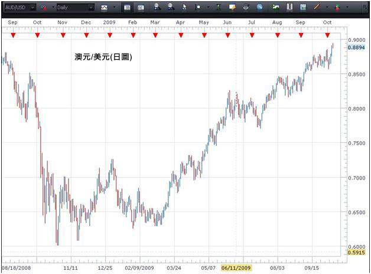
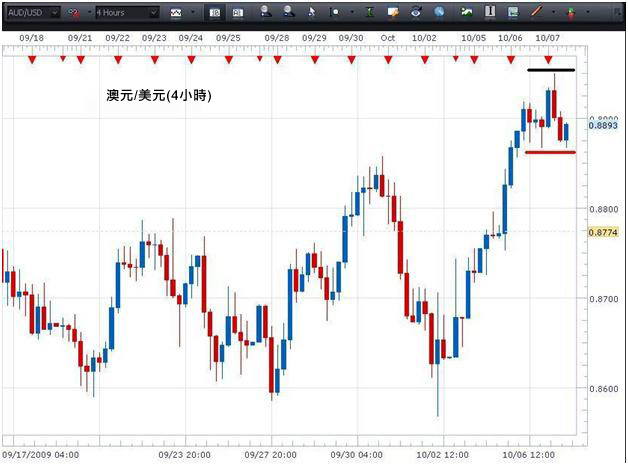
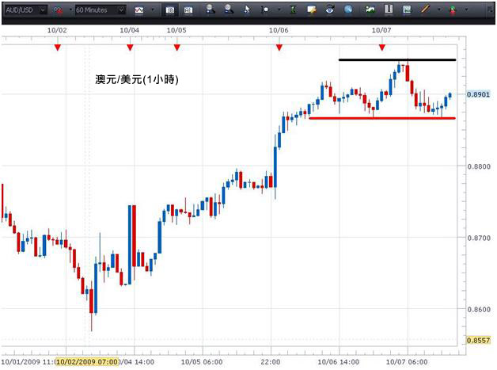

多重时间段分析是透过观察相同货币对多个不同时间段图表而分析货币对的方法。其优点是藉观察较长的时间段，然后再看较短的时间段，继而再看更短的时间段，交易者将可对货币对如何移动有更详细的瞭解，从而在更有根据的情况下建立交易。
一般而言，交易者会选择三个时间段，而有关时间段将会根据交易者的个人交易策略而定。较长线交易者可以选择每週、每日及4小时图。较短线交易者可以选择4小时、1小时及15分钟图。重点是以当中最长线的图表来厘定"整体趋势"及应朝哪一个方向买卖。其后使用较短的时间段来"微调"在该个方向哪一个水准建立持仓。
您可能曾经听说过"趋势中存在趋势"。例如，在日图中，趋势可能是一个升势，而在4小时图中，则可能是跌势，在1小时图中可能是持平… 所有趋势都是关于同一个货币对。
在此情景下，整体趋势以日图为基础 – 即上升。然而，在这个升势之内，于4小时的时间段内则出现转势。转势很可能在某一点结束，而4小时时间段则与日图趋于一致。同样道理，在4小时时间段记忆体在1小时的趋势。随着1小时趋势与4小时趋于一致，而4小时与日图趋于一致，一个有机会更高的入市点将会出现。
总括来说，当最短的时间段完成转势(转势指我们在日图中注意到与趋势相反的走势)，及开始重新朝每日趋势的方向移动时，我们便希望建立交易。这就是我们的入市信号。
试想像它们是一个密码锁的制栓，全部都有次序地趋于一致。
透过使用数个时间段，交易者可以在三个不同层面上深入瞭解货币对，及学习运用该些资料，以成功地在时间段所示成功机率最高的时候建立交易。
现在看看澳元/美元的一些图表。

在以上日图，我们可以看到货币对正处于升势。单凭上述资料，我们知道，我们只希望寻找买入的机会。由于现在已处于这次看升势的最顶端，所以并非买入货币对的最佳时间，因为可能即将会出现转势。
现在就看看较短时间段的图表能否说明这项交易。

在这个4小时图，我们可以看到货币对仍然处于升势之中(更高的最高价及更高的最低价)，以及一个支援位元已在图表的红线位置建立。若支援位元能够守住，交易者可在该点建立长仓，因为货币对其后将会再次朝日图升势的方向移动。(然而，若蜡烛的收市价低于支持位，我们可等到形成另一个底部后才建立长仓。)较为保守的交易者可能会等到货币对突破黑线的阻力位后才建立长仓。
这里与多重时间段分析有关的重点是在作出入市决定前，我们可以运用较短时间段图表来仔细地研究货币对的买卖情况。
现在看看此货币对的1小时图

从1小时图可见，支持位(红线)曾被多次测试。这巩固了此一支持位可能会守得住的看法，及可能会成为再次向上攀升的起点。若收市价低于支持位，如4小时图所示，我们可待至建立新底部后才建立长仓。然而，若要有更大的信心，交易者可待至升穿阻力位，及蜡烛的收市价高于阻力位(黑线)为止。收市价处于该水准之上，显示买家再次控制此时间段。
藉使用澳元/美元这三个不同时间段的图表，我们期望能显示出交易者可如何运用多重时间段分析来加深对货币对如何运作的认识及如何优化在趋势方向中入市的瞭解，并且对此获得更大的信心。